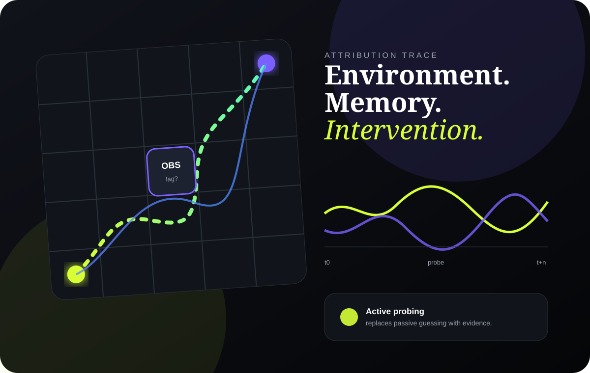
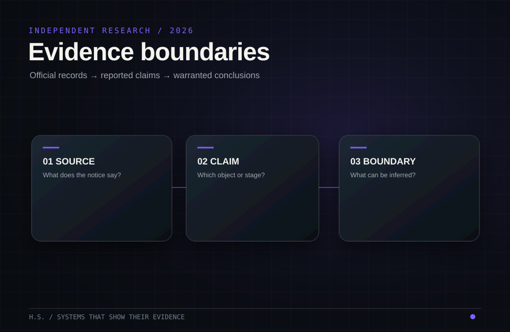
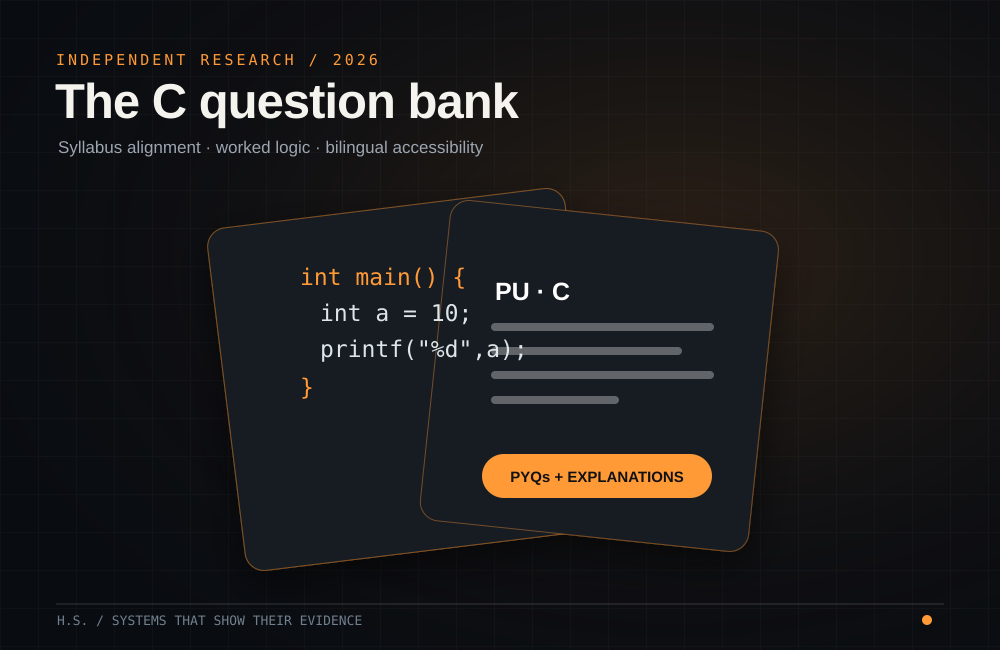

01 Independent undergraduate research · India
I build evidence-led systems.
From causal AI and learning technologies to public-examination reform, I study how a system can make claims people can inspect, contest and trust.
Auditable traceselection → estimate → route
02 / THE RESEARCH ETHOS
The work behind the interface
A question first.
A claim only if earned.
I use software, experiments, quantitative analysis and public-policy reasoning to make difficult systems more accountable to the evidence they actually possess.
Define what can actually be claimed.
Separate the research question, target construct, decision boundary and scientific limitations before touching a model.
Build baselines that can embarrass the idea.
Use ablations, negative cases, multi-seed studies, calibration and uncertainty instead of a single flattering metric.
Expose the reasoning inside the product.
Surface evidence, confidence, provenance and next actions so the interface never overstates the model.
03 / FEATURED RESEARCH
Five investigations.
Five investigations.
One standard of evidence.
Scroll to explore each research question. Individual case studies document methods and limits.
01 / RESEARCH
Read the case study ↗
Reality Attribution
Can an agent distinguish a changed world from delayed memory or hidden intervention?
A finite-domain GridWorld attribution study and exploratory LunarLander protocol investigating whether diagnostic actions can distinguish environmental change, stale observations and hidden intervention.
16,368aggregate rows
50/50GridWorld tests
PilotLunarLander

02 / PUBLIC SYSTEMS
Explore the policy case study ↗
PEXORA
What would it take for a public examination to be secure, scientifically defensible and genuinely fair to candidates?
A citizen-authored constitutional, legislative and operational reform architecture spanning exam integrity, independent assurance, accessibility, evidence preservation and remedies.
870document pages
2026submitted
Draftnot enacted

03 / EDUCATION AI
Read the case study ↗
M-Print
How should an adaptive system decide what to ask next—and explain why?
Adaptive assessment and learning-analytics research within the MANAS-PU vision: response-level evidence, prerequisite pathways and inspectable feedback; human validity remains unproven.
FastAPIbackend
Neo4jgraph routes
Prototyperesearch stage
m-print / evidence workspace

θposterior
Why this item?inspectable utility
04 / CULTURE × CODE
Read the case study ↗
MAQAM-AI
Can multilingual poetry be mapped to musical mood without erasing cultural grammar?
An interactive computational-musicology workbench with exact formal alignment, a conservative notation parser, and exploratory Raag/Taal and multilingual poetry resources.
Exact DPformal search
MuseScorescore input
Prototypenot validated

05 / HUMAN–AI
Read the case study ↗
Cognitive Mirror
When should an AI infer something about a person—and when is the evidence insufficient?
A proposed psychology-grounded benchmark for evidence-supported mental-state inferences, hard negatives, human annotation, calibration and abstention; data collection is not complete.
30%+target negatives
3planned raters
Designnot benchmarked

04 / ADDITIONAL WORK
Research is not
one discipline.
Supporting projects in education technology, documentary research, curriculum design and institutional governance. Each has a distinct scope and evidence status.
01 / LEARNING SYSTEMSArchitecture · ongoing ↗

MANAS-PU
A proposed student-centric system connecting learning analytics, graph-informed pathways, skill records and competency representation; M-Print is a research component.
02 / DOCUMENTARY RESEARCHWorking report · public ↗

Evidence boundaries
A source-to-claim audit of selected Indian examination notices and reports; distinguishes corrections, process stages and outcomes, without inferring a population error rate.
03 / LEARNING DESIGNAuthoring · ongoing ↗

PU C question bank
A syllabus-aligned, bilingual programming learning resource with structured previous-year questions, worked explanations and revision maps.
04 / GOVERNANCE DESIGNCompleted · 2025 ↗

Student Council Operations Manual
A documented governance framework with roles, onboarding, processes and accountability mechanisms for a school student council.
05 / OUTPUTS & EVIDENCE
Show the work.
Mark its limits.
Projects here are independent research, prototypes, working reports or policy proposals—not peer-reviewed publications unless explicitly identified as such.
PUBLIC SOURCE · SOFTWARE PROTOTYPEMAQAM-AI: code, formal alignment lab & evidence notesFormal solver behavior testable on constructed fixtures; independent musical accuracy unresolved. ↗
PUBLIC SOURCE · EDUCATION PROTOTYPEM-Print: inspectable cognitive-engine repositoryEngineering artifact; no validated psychometric or educational efficacy claim. ↗
PUBLIC WORKING REPORT · NOV 2026Evidence Boundaries in Public Examination ReportingSelected documentary comparison with a published method and corpus; nonrepresentative sample. ↗
RESEARCH AUDIT · NOV 2026Reality Attribution: bounded GridWorld verificationVerified table aggregation and restored-tree tests; LunarLander publication evidence pending. ↗
CITIZEN-AUTHORED POLICY PROPOSAL · 2026PEXORA: constitutional, legislative and operational architectureGovernment referrals documented; no official endorsement, enactment or validation. ↗
06 / THE METHODS
From messy signals
to defensible conclusions.
Different problems require different tools: finite-domain enumeration for causal ambiguity, formal solvers for symbolic music, and documentary analysis for institutional accountability.
Research loop
Question
→ Evidence
→ Decision
→ Evidence
→ Decision
Selected method
Statistics
Hypothesis tests, confidence intervals, effect sizes, regression diagnostics and assumptions become part of the claim—not a footnote after it.
Python✦Pandas✦NumPy✦SciPy✦statsmodels✦Scikit-learn✦FastAPI✦SQL✦Neo4j✦PyTorch✦
✦✦✦✦✦✦✦✦✦✦
07 / EXPERIENCE
From research
to real institutions.
My work crosses independent research, AI learning analytics, mentorship, systems design and visual communication.
Full résumé↗Jul 2025 — now
Independent projects
Lead Researcher
Designing reproducible experiments across reinforcement learning, Indic NLP, human-AI interaction and learning analytics, with explicit baselines, uncertainty and limitations.
Dec 2025 — Jan 2026
CSRBOX
Applied AI Research Intern
Analysed learner accuracy, response time and concept-level errors; developed visual knowledge maps and a psychometric framework spanning 100+ questions.
Feb 2024 — now
Pro bono
Academic Mentor & Strategist
Mentored three students to successful examination outcomes and transformed rote preparation into diagnostic, logic-driven learning pathways.
Oct 2023 — Jun 2024
Nankana Sahib Public School
Graphic Designer
Built typography systems and editorial layouts for newsletters and institutional communication serving more than 4,000 students and faculty.
08 / ABOUT & EDUCATION
The person behind the pipeline
Analytical by method.
Human by design.
I am pursuing a distance-mode BS in Applied AI and Data Science at IIT Jodhpur alongside a BCA at S.C.D. Government College (affiliated to Panjab University). My interdisciplinary practice bridges computational methods, education, cultural systems, psychology and public policy.
IIT JodhpurBS Applied AI & Data Science · distance mode · in progress
Panjab UniversityBCA · S.C.D. Government College · in progress
CBSE HumanitiesClass XII · multidisciplinary · 97.2% (2025)
students cleared their target examinations.
readers reached through visual communication.
Hindustani classical and Sufi practice informs the work.
member student council structured through a governance manual.
09 / EARLIER DISTINCTIONS
Distinctions reported in my earlier CV.
Class XII Arts Stream Topper · 97.2%✦
State-Level Web Development · 3rd✦
District Quiz Champion✦
National-Level I-DESIGN · 2nd✦
Featured in The Tribune, Dainik Jagran, Jagbani & Ajit✦
✦
✦
✦
✦
✦
10 / CONTACT
Good questions deserve
harkeerat3211@gmail.com ↗
Open to supervised research, interdisciplinary projects and thoughtful critique